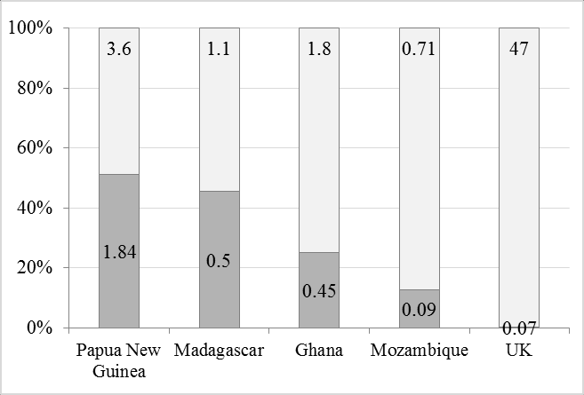

Desalination is the process of removing salt and minerals from sea water- to make it suitable for human consumption & industrial use”
(Pure Aqua, 2014) . There a multiple methods for desalination to occur, e.g.: Reverse Osmosis, RO, Ultrafiltration, UF. The energy demanding
process gives rise to concerns of its financial implications. This article discusses a solution to this problem, Nanofiltration: a method of
desalination water which has significant influence over the water industry, due to its cost effectiveness. Nanofiltration is appreciated for
its ability to cause outstanding effects to the economy, which infiltrate into beneficial humanitarian impacts, e.g. by helping to solve the
world’s water epidemic.
INTRODUCING: NANOFILTRATION…
With a scarcity of 0.5% of fresh water on this planet(Kucera, 2019, Desalination: water from water) and a growing population, the need for
reliable methods which produce fresh water has risen exponentially. Desalination is therefore widely used in industry. Nanofiltration is a
process that lies in between Ultrafiltration and Reverse Osmosis, given that: it has greater rejection power than UF but is less energy demanding
than RO.(Ramaswami, ET AL, 2016). Desalination can occur via nanofiltration; this is filtration, where a substance is put through a filter with
holes that are measured in nanometres (Collins,1979, Collins English Dictionary).
ANALYSIS AND DISCUSSION
ITS STRUCTURE
The presence of ionizable groups means Nanofiltration membranes have a charged surface: consequently the kinetic process is reliant on
equilibrium conditions (Chowdhury, 2021). Over 90% of organic compounds with molecular weight above the molecular weight of the membrane,
are rejected by nanofiltration, while multivalent ions (ions which have more than one valency) and monovalent ions i.e. ions having only one
valency,(Collins, 1979) are rejected (>99%) and (70%) respectively by Nanofiltration (Ismail, Matsuura, 2022). It’s membranes
differ between having a larger free space, small pores or nanovoids (Endre Nagy, 2019) i.e., tiny empty spaces in a material
(Manaher, 2023).
Reverse Osmosis, Nanofiltration and Ultrafiltration are different methods, which all have the same purpose of desalinating water to increase its purity.
Each method differs in terms of pore sizes and effectiveness, as illustrated in table 1 below:
Method
Pore Size
Impurities Removed
Impurities Not Removed
Mircofiltration
0.1-10um
Bacteria, suspended solids
Viruses, organic matter, mineral salts
Ultrafiltration
0.01-0.1um
Some viruses, bacteria, suspended solids
Some viruses, organic matter, mineral salts
Nanofiltration
0.001-0.01um
Most viruses, organic matter, and salts that create hard water
Some mineral salts, including Sodium Chloride and some viruses
Reverse Osmosis
0.0001um
All organic compounds, all viruses, and most minerals
Only trace amounts
Table 1 Source.
Nanofiltration’s high rejection probabilities, are what tends to differentiate it from similar kinds of processes i.e. Reverse Osmosis and
Ultrafiltration.NF has proved to be more advantageous than Reverse Osmosis, given that: Nanofiltration consumes 29% less energy than Reverse Osmosis:
making it more sustainable. (Kanber Wafi, et, al, 2019).
HUMANITARIAN IMPACTS...
In 2015, more than 1.8 billion people were consuming unsafe water. It is probable that this quantity will rise to nearly 4 billion: not only due to the
current state of the climate - which increases the quantity of chemical pollutants, but also due to the risks and costs that developing countries typically
face. (Ramaswami, ET AL, 2016). Billions live in this cycle of drinking harmful water, and without solutions provided, this can objectively be fatal. As a
result, methods to desalinate water, i.e., Nanofiltration, which is a more sustainable process than RO & UF, is essential to provide safe water.
Nanofiltration has wide impacts which range from being biological (improving healthcare due to safer water consumption) to economical(margins of income can
be made in villages of developing countries, through the employment opportunities nanofiltration can provide) (Ramaswami, ET AL, 2016).
Figure one shows the daily salary in GBP experienced by each country to the average cost of 50L of safe water experienced in each country:

Figure one source..
Papua New Guinea’s (PNGs) unfeasible access to consume clean water is what ranks it at top 3 in the world for lowest access to clean water -
along with Eritrea and Uganda (WaterAid, 2018): Not only does this explain a positive correlation between a country’s ability to provide clean
water & the performance of its economy, since PNGs economy has contracted in the past 3 years (International Trade Administration, 2022) , but
proves: water accessibility has visible effects on the success of an economy. In the presence of an inequitable distribution of clean water,
the economy is likely to face hindrance in its expansion, along with both: a decline in agricultural activity & quality of life for its citizens.
PNG is not the only nation to suffer from poor sanitation: According to the World Health Organisation, Ghana faced 7,653 deaths caused by Water,
Sanitation and Hygiene related illnesses in 2019; to put this into perspective that is almost 1 person every hour dying from preventable WASH
related diseases (United Nations Ghana, 2023). Despite this, the nation is experiencing a general improvement in its sanitation & water access,
as illustrated below:
Figure 2 source.
The trends displayed clearly show trends which highlight improvements are being made in both sanitation and water. This can be credited to the installation of Nanofiltration sites in Ghana; according to Aqua Africa, their installations are
likely to have alleviated 15 000 out of water poverty (Aqua Africa, 2022).
Additionally, Nanofiltration provides protection against viruses: the size of a virus varies between 20 - 80 nm, whereas Nanofiltration membranes have
pore sizes of below 1nm (Bart Van Der Bruggen, 2003). This reduces the use of chlorination of water, which can cause the formation of Disinfection By
Products(DBPs). DBPs are “chemicals that form when chlorine is used for disinfecting drinking water”. (Government Of Canada, 2023). Exposure to such
can have detrimental implication to one’s health, e.g., DBPs can lead to liver damage and decreased nervous system activity.(Centres for Disease Control
and Prevention, 2009).
CONCLUSION: COULD NANOFILTRATE ALLIVIATE A WATER EPIDEMIC?...
Though it is read about how billions are living in unjust circumstances, it is easy for the familiarity of reading large numbers, which state the magnitude
of the problem, to become futile, as the meaning of these numbers are subconsciously replaced to being solely numbers – rather than actual realities;
experiences with deadly consequences. This causes an unawareness - of the depths & true reality of what these figures are indicating concerning the
lifestyles experienced by those internationally.Nanofiltration is highly respected, due to its ability to solve these humanitarian crises, while also
causing economic benefits. Nanofiltration provides hope that clean water can be accessible to all.